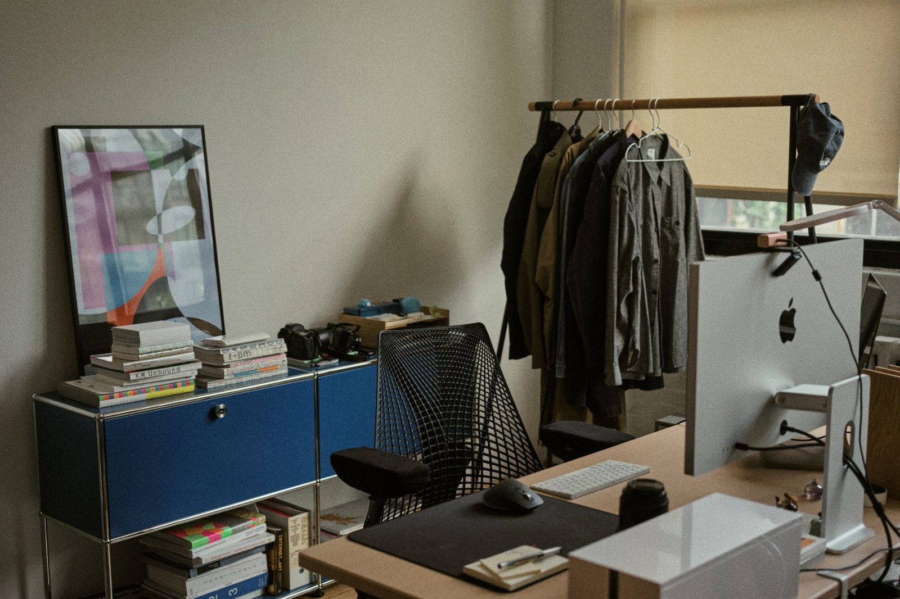
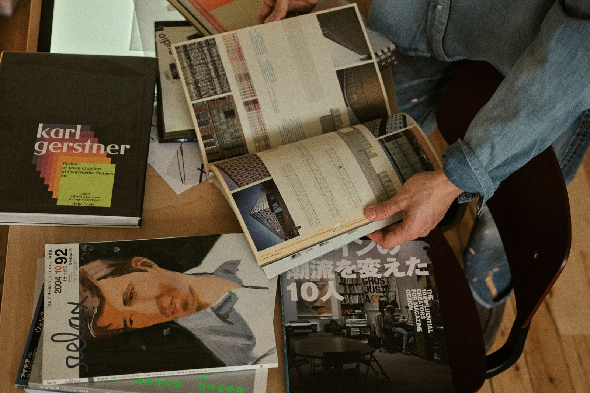
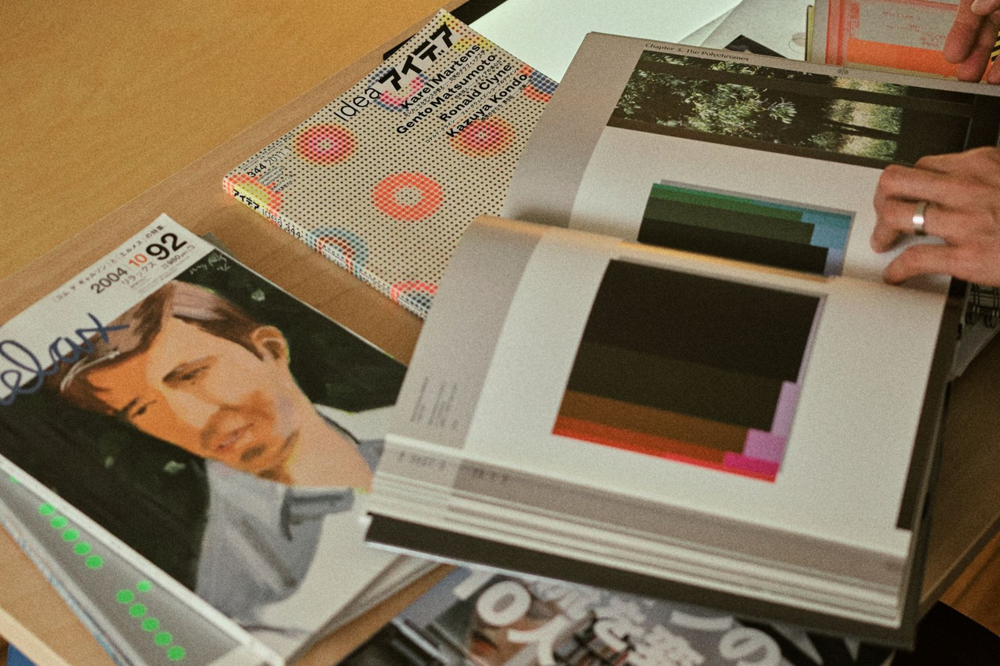
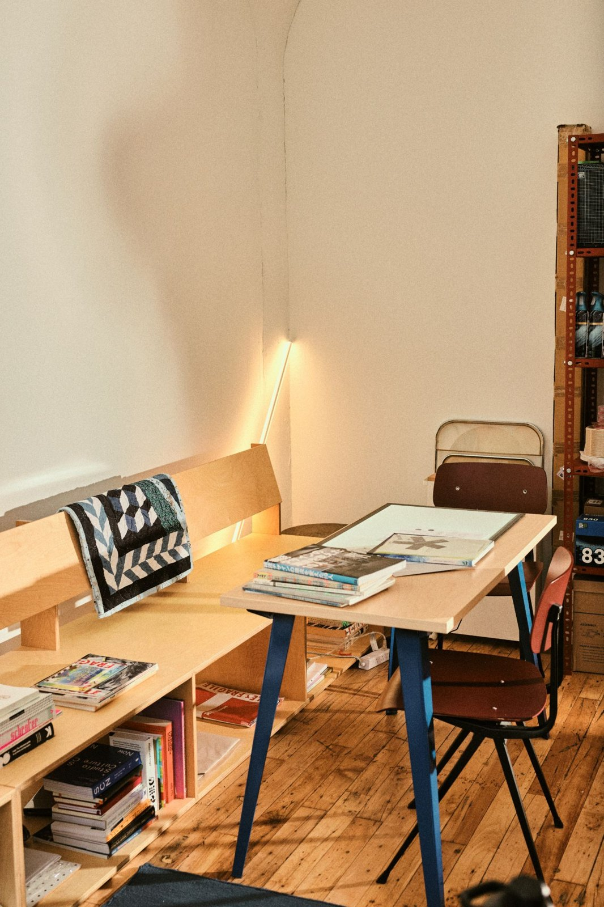
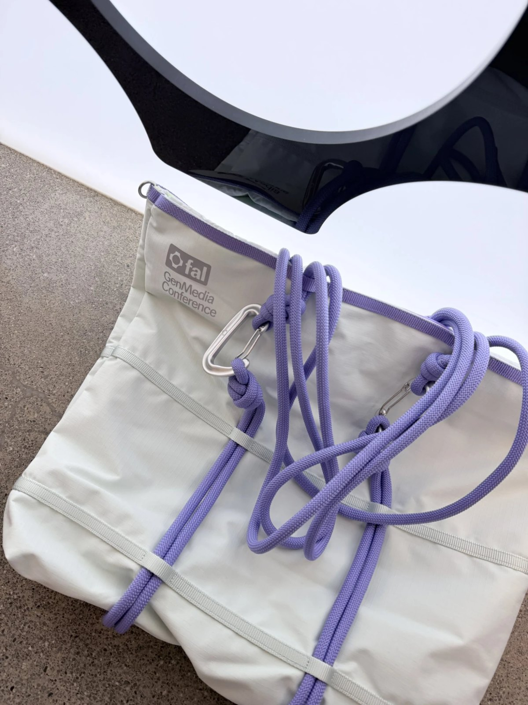
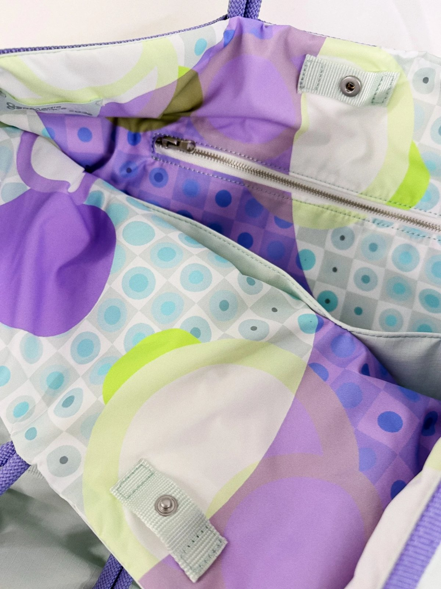

An interview with Adam Ho, Head of Design at fal
Design as discography
Recorded August 2026 · Published October 2026
Adam Ho leads design at fal, the generative media platform for developers. He came to design the long way, through marketing, a media-planning job, startups and years of self-teaching, before this grew into a decade-long practice. Before joining fal full-time, he led an independent studio practice out of Brooklyn, with clients covering developer tools, crypto and other emerging technology companies.
Adam thinks about design the way he thinks about music. He treats his body of work like a discography, hunting for a signature sound while trying something new with every release. His vocabulary is built from circle and square primitives, and his instincts are shaped by the fine art world and graphic design books.
Our conversation moves through his path into design, how he communicates a style clients can feel more than just see, the shift from an independent studio to leading a team in-house, and how creative decisions get made at fal. Along the way, he makes the case that in an industry AI has made fast and frictionless, the best work comes from deliberately putting some friction back in.

Did you always know you were a creative person?
I studied marketing, not design, and I wanted to be a brand strategist. My first job was in media planning right after college, but it was not very creatively fulfilling. So I took a gap year to do a startup. I was reading all these investment books, including Zero to One, which I read like ten times. It didn’t work out, but I realized I really liked designing for the company I was starting.
I eventually became a designer at a nonprofit called Pencils of Promise. While I was there, I studied product design. I’d go to Panera Bread, look at the Google Material website, and write down, “The shadows are like this,” or “The color theory should be like this.” I spent hundreds of hours on Skillshare. I took a Framer class from Noah Levin, who’s the VP of Design at Figma. I started putting work out on Dribbble, and Noah saw it and asked if I wanted to interview as a senior product designer. I told him I was still pretty junior, but he gave me my first shot. Shortly after, I joined a program called Designer Fund, and through that I got a job at Zendesk as a brand designer. That’s when I moved to San Francisco.
Of course there’s the creative part of my childhood, too. I drew a lot as a kid. But in second grade, I saw a kid who could draw better than me, and I literally stopped drawing then and there. And music — I listened to a lot of hardcore, pop-punk music as a kid, and I still do. Every time I design something, I think about it as music.
What does that mean — thinking about design as music?
I treat the projects I do like a discography, the way an artist has albums on Spotify. The analogy I give is Beach House — I feel like Beach House makes the same album every time, but it’s so good that I still want to listen to each one. There’s a through line, a very signature sound.
When I was working on my independent studio practice full-time, it was hard to approach each client project, because I wanted to try something new every time. But I’m also telling the clients that I have a certain style, so if I propose something that stretches the limits of that style, they say, “Wait, this is not what I signed up for.” It’s a tension music artists go through too.
How did you discover your signature look, and how would you communicate that to clients, even though it’s a visual language?
When I talk to prospective clients, I tell them to picture a Venn diagram, two blobs in the air. This blob is how you perceive my work, and this blob is how I perceive my work, and they barely overlap into the thing you see on my website. I tell them the process is going to push them together, but realistically it’s never going to fully overlap, because we have different experiences.
The work I do is also a corporate practice for brands. It needs a hook, like a pop song has a hook. But there’s an undertone to everything. Part of my brain is practical, knowing this is what clients need. And part of my brain is constantly sharing things in metaphors. I can say, “When drummers have ghost notes, this visual thing is like a ghost note,” something you can’t see but can feel in the beat.
Does the metaphor come after, “I need to communicate this,” or is it part of your inspiration at the beginning?
I draw a lot of inspiration from the fine-art world. There are a lot of YouTube lectures, in a classroom, not lit very well, the microphone sucks, but they’re an hour long of a painter’s intentions behind doing something. There’s a painter named Stanley Whitney. He’s a master of colors. Instinctively it looks like scribbles, a crayon kind of style. I’m glad he’s getting his flowers while he’s still alive.
So the fine-art world is where you gather most of your inspiration?
Yes. I also collect archival graphic design books. As I get older, I turn more into a graphic design purist. I want my work to feel like it’s not of this era, like it was made a certain way, with a little bit of friction in there. Even with all the advancements in AI, it’s a challenging job for me, because so much of it is meant to be frictionless technology. I try to infuse some kind of friction, even if I have to force it. That’s how I feel it creates the best work.
Behind me, I have books that are fifty, sixty years old. There’s Karel Martens, a Dutch graphic designer. There’s Wang Zhihong, a brilliant Taiwanese graphic designer. And Karl Gerstner, a Swiss design practitioner and an early pioneer of systematic design.

In my practice, I describe this thing called a primitive. A lot of my work is the combination of circles and squares, if I’m blunt about it. My practice is: is there a limit to circles and squares? Can you change the fill? Can you put a stroke on it with no fill? If you multiply that shape, it’s not just a primitive anymore, it’s scaled up.
I didn’t go to art school, so I over-index on, “What if I got an MFA? What would I learn?” I’d give myself my own tracks in my head, “I need to study this, I need to study that.”
Is choosing the people you gravitate toward just following your nose, trusting your gut?
It’s a chain of happy accidents. If I see a contemporary designer, someone my age or younger, and I read an article about them, I wonder if they were influenced by this person. They name that person, and that person names another, and I can see it in their work too. A lot of people see my work and say, “Your work reminds me of Karel Martens.” And it’s intentional. I have eight of his books behind me. With this knowledge and research, it’s just as important to be inspired by yourself and experiment and explore and push what works for you. It’s all in this creative consciousness. I’m very independent in my practice, but I’m also aware of the community. I go in waves. Sometimes I’m really in it, and sometimes I just need a few years to chill out.

Why make it a studio versus an agency?
I’d ask agency owners why they scaled from just themselves to hiring many people. They’d say, “If you want to do big things, you should expand your practice.” But I felt like I was already doing what I wanted to do anyway. Why take on the extra stress of having to pay someone, and the responsibility of being part of other designers’ careers?
The finances were already pretty good, and I kept it very lean. Staying lean meant that if I needed a practitioner outside of something I could do, I could pay them a fair wage. A lot of times I’d overpay from the standard, because my practice was doing well and I could share some goodwill.

What was it like moving from an independent studio to in-house at fal?
It’s jarringly hard. As a design department at a fast-growing startup, you’re at the service of the whole company: operations, events, branding, websites, people asking for gym apparel, stickers, sales decks. And, somewhat unique to fal, we have a function called creative engineers, who create workflows for generative imaging. So there are many layers: art direction for the imaging, art direction for the branding, and at the same time people literally asking why we’re using a serif instead of a sans serif.
The work itself is very hard, and adding the interpersonal layer is expert mode. But every person I hire is taking on their own problem set. A lot of times I don’t even have to ask, “Did you think about this?” I let them sit with it, and four weeks later I’ll go to ask, and they’ve already handled it.
How do creative decisions get made at fal?
The reason fal hired me was that they wanted what I provide: I try to think of a slightly out-of-the-box design decision every time. It’s just enough to push the envelope a little. What’s challenging is that there still needs to be the normal stuff, social media templates, sales decks, so it’s hard to balance the two.
It’s an interesting time in AI because there are net-new problems. That’s part of why I did a lot of crypto stuff in the past. I didn’t really understand it, so it felt like a net-new paradigm to solve. The net-new thing now is generative media. Generative media at fal is so infinite that we almost have to put constraints on it.
In AI generative imaging, you always see these big sweeping motions, a dragon spitting out fire. I want us to get away from that, toward something more stylized, more thought-through and conceptual. It’s like the first thing you type into a Midjourney prompt: “a squirrel and a dog combined, make it cute.” Then people add modifiers, “4K, in this other style.” We enable all of that. But what’s the concept behind it?
We hired a designer named Claire Shin, who came from a studio called 2x4. They do a lot of work for legacy fashion houses like Miu Miu and Chanel. The images she references are archival Prada from the early 2000s. In the fashion world that’s not niche, but software engineers see it and ask, “What is this aesthetic?” I was looking at an image someone generated the other day, and it was good, but I thought, why does it look like a Ferragamo suit with a sportswear collection? Those wouldn’t be in the same photo. You can’t fully change someone’s tastes, but I want to tell them, “If we scrutinize this a little, these things aren’t in the same world.”
Is it a growing trend for tech companies to recruit people from the independent world?
I try to have blinders on about what other teams do. What I’m trying to do with fal is approach the role as an experiment: the vision of a team that would be really good in the space. When I hire, I look for people with deep specializations in something the team doesn’t have. I decided we needed someone specifically doing art direction for the imaging, one role. I want one person owning, “It should look like this all the time.” We have another designer who’s really good at out-of-home production, event installations, brand experience that’s mostly physical, and merchandise.
I also hired someone whose specialty is that she knows how to do everything, a catch-all, which is a specialty in itself. Why would I hire ten people with the exact same skill set? There’d be a lot of arguments about who does what. The thing I index on is something other people would find boring. I want someone to specialize in it so they have free rein to own that vertical.


fal has a reputation as a high-craft, high-taste organization — what work do you think is left?
To us, it doesn’t feel like it’s out there yet. We’re still in the shadows, waiting for a big moment.
What do you think that big moment will feel like?
I think it’ll be the same feeling as when I released a new website in my independent practice. It’s not a big press event. It’s just, “I’m proud of this thing I worked on for the past year.” We’re doing a lot of bespoke stuff that takes time, which means there’s friction. Some coworkers might say, “We could train this thing to make a new typeface,” and I say, I don’t want to do that. Let me hire a type foundry to craft a custom typeface that’ll take six months. You might talk to me in three months and I might lose my job because I’ll always take the road less traveled. But there’s a nice tension between taking your time and acknowledging that this industry is so fast-paced.
Rapid fire
There’s a book I go to a lot, Karel Martens’s Printed Matter. It’s the best coffee table book: you open a page and see the colors, and every page is the best-laid-out thing you’ve ever seen. I also have a book called Statement and Counter-Statement by a studio called Experimental Jetset. They just reprinted it, which I’m a little mad about because I paid two hundred bucks for an older copy.
We use a lot of coding tools, Cursor, Claude Code. On brand design, we released this thing called gen media CLI (genmedia.sh). We were sharing index.html files back and forth, which is similar to how, before Figma, you had to share Sketch files. It’s a forced-friction thing where you have to open the HTML file and see it. The site itself isn’t a real thing, it’s a computer thing, but the CLI is the thing. Right now I’m in this creative place where, if I show the founders, if I show Gorkem, “Do you like this?” and he says, “I love it,” then I say, “All right, let’s ship it, no notes.”